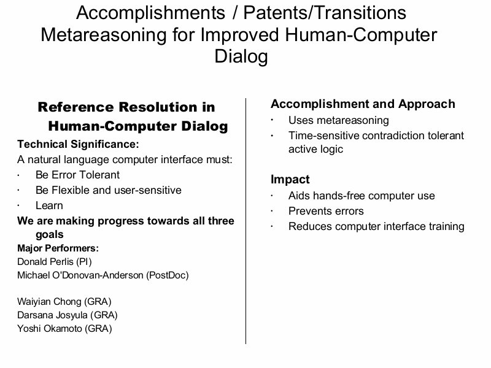

Notes:
Mistakes are inevitable in dialog. A word might be misheard, a reference missed, or a meaning misinterpreted. Yet the conversation can almost always continue, because a central feature of human dialog is the ongoing, real-time repair of that dialog: ``I'm sorry, What was that word? Who are you talking about? What are time flies?'' This missing meta-dialogic capability in most natural language dialog systems make them inadequate conversational partners and frustrating to use.
It is our contention that the ability to engage in meta-dialog is necessary for conversational adequacy, and, perhaps more importantly, that a robust meta-dialogic ability can make up for weaknesses in other areas of linguistic ability.